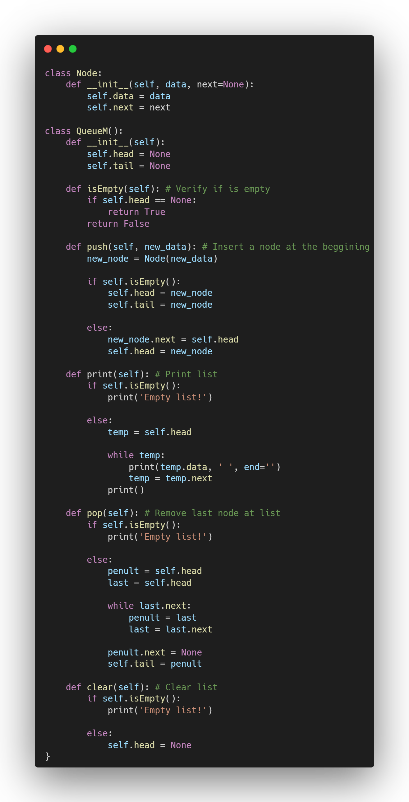
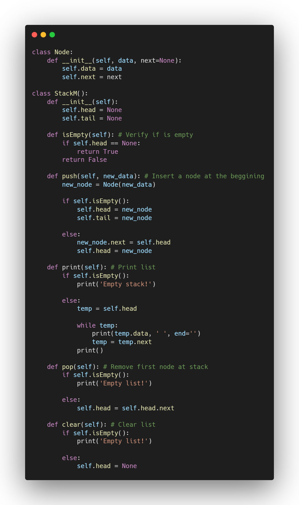

Filas e Pilhas
No vasto campo das estruturas de dados, Filas (Queues) e Pilhas (Stacks) se destacam como duas das formas mais fundamentais de organizar dados. Ambas são consideradas estruturas de dados lineares, o que significa que seus elementos são dispostos em uma sequência. No entanto, a principal característica que as define e diferencia é a regra que gere a inserção e remoção de seus elementos.
Filas (Queues)
Imagine uma fila de banco ou o caixa de um supermercado. A primeira pessoa que entra na fila é a primeira a ser atendida. Essa é exatamente a lógica que rege uma estrutura de dados do tipo Fila. Ela opera sob o princípio FIFO (First-In, First-Out), garantindo que os elementos sejam processados na mesma ordem em que foram adicionados.
Um elemento novo é sempre inserido no final da fila, enquanto a remoção (e a leitura) de um elemento sempre ocorre no início da fila. Essa abordagem é ideal para cenários onde a ordem cronológica de chegada é crucial.
Onde as filas são usadas?
- Gerenciamento de Impressão: Documentos enviados para uma impressora são colocados em uma fila e impressos na ordem em que foram recebidos.
- Sistemas de mensagem e requisições: Servidores web e sistemas de mensageria utilizam filas para gerenciar requisições de clientes, garantindo que sejam tratadas de forma justa e ordenada.
- Algoritmos de travessia em grafos: O algoritmo de Busca em Largura (BFS) utiliza uma fila para explorar os nós de um grafo nível por nível.
Um exemplo em código
O exemplo a seguir mostra uma fila criada em python.
Pilhas (Stacks)
Agora, pense em uma pilha de pratos ou uma pilha de livros. Você sempre coloca um novo prato ou livro no topo da pilha e, quando precisa de um, remove o que está no topo. Esta é a analogia perfeita para a estrutura de dados do tipo Pilha. Ela funciona com base no princípio LIFO (Last-In, First-Out).
Em uma pilha, tanto a inserção quanto a remoção de elementos ocorrem em uma única extremidade, conhecida como o topo da pilha. O último elemento adicionado é, por definição, o primeiro a ser retirado.
Onde as pilhas são usadas?
- Mecanismo de "Desfazer" (Undo): Editores de texto e software de imagem usam uma pilha para armazenar as ações do usuário. Cada vez que você pressiona "desfazer", a ação mais recente (no topo da pilha) é removida e revertida.
- Pilha de Chamadas de Funções (Call Stack): Quando seu código chama uma função, ela é "empilhada" na call stack. Quando a função termina, ela é "desempilhada". Isso permite que o programa saiba para onde retornar após a conclusão de uma função, sendo crucial para a recursão
- Verificação de Parênteses e Tags: Compiladores e editores de código usam pilhas para garantir que cada parêntese de abertura, colchete ou tag HTML tenha seu correspondente de fechamento na ordem correta.
Um exemplo em código
O exemplo a seguir mostra uma pilha criada em python.
